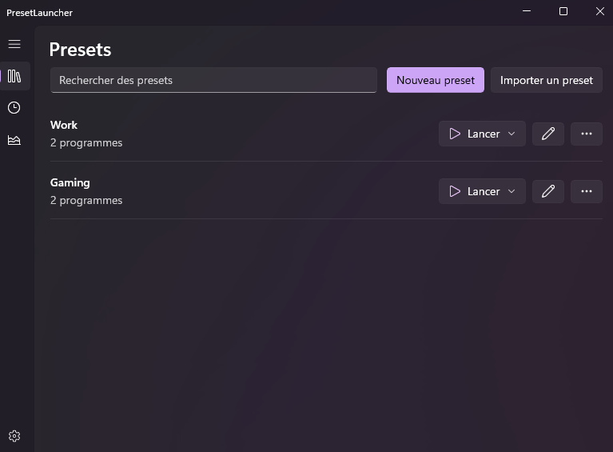

Télécharger PresetLauncher
Installateurs Windows x64, x86 et ARM64.

Capture indisponible
Configuration requise
Une version de Windows prise en charge par Microsoft est requise. L’installateur exige au minimum la build 17763. L’application cible la build 19041. Les runtimes .NET et Windows App SDK sont inclus.
Type du système : Paramètres → Système → Informations système.
Vérifier le téléchargement
Les installateurs ne sont pas signés Authenticode. Windows SmartScreen peut afficher un avertissement. Les sommes SHA-256 publiées permettent de vérifier l’intégrité de l’installateur.
Get-FileHash .\PresetLauncher_Setup_<version>.exe -Algorithm SHA256Un changement d’architecture nécessite la désinstallation préalable de la version existante. Les données sont conservées ; une sauvegarde préalable est recommandée.